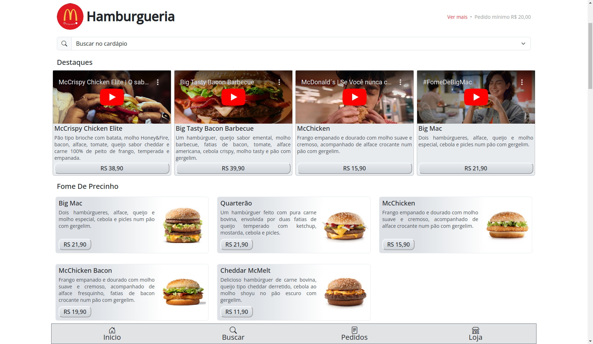

Oi, sou Cláudio Marques, um desenvolvedor de sistemas e página web. Vou apresentar uma oportunidade que pode impulsionar o seu negócio.
Estou oferecendo a criação de um site semelhante ao do iFood, com um cardápio digital personalizado para o seu restaurante. Este site facilitará a realização de pedidos online, sendo entregues diretamente no seu WhatsApp, simplificando o processo e proporcionando uma experiência mais conveniente para seus clientes.
Se estiver interessado em melhorar a presença online do seu restaurante e aumentar as vendas, ficarei feliz em discutir mais detalhes e personalizar uma solução de acordo com as necessidades específicas do seu estabelecimento.
Atenciosamente,